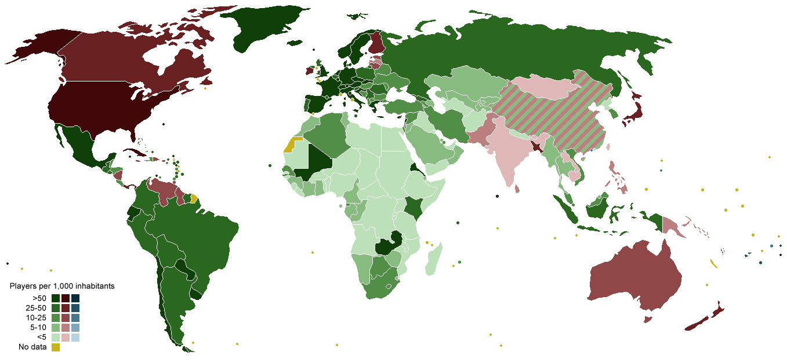
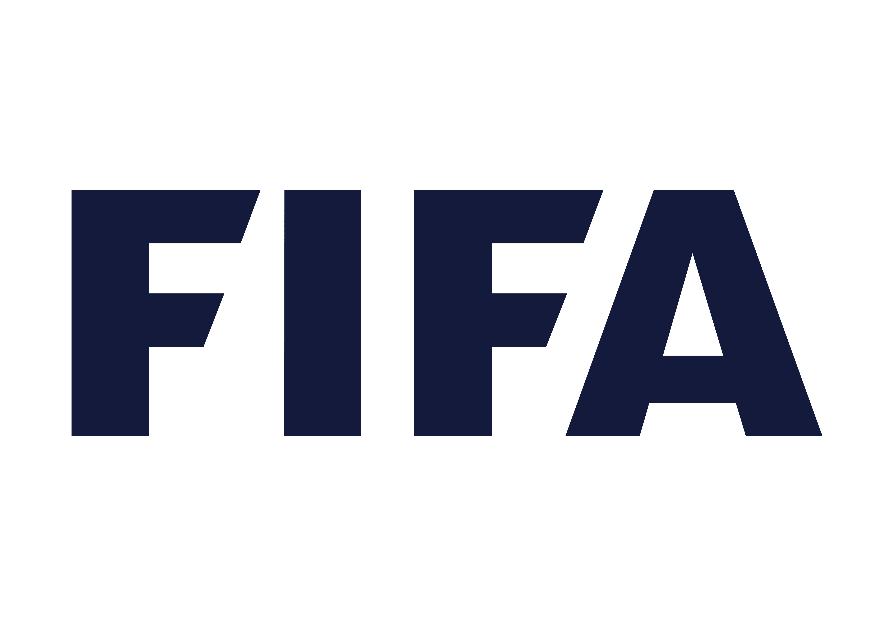

Futbols ir komandu sporta veids, kurā piedalās divas komandas, katrā uz laukuma pa vienpadsmit spēlētājiem, izmantojot futbolbumbu. Futbols ir vispopulārākais sporta veids pasaulē.
Futbols ir spēle, kuru spēlē uz taisnstūrveida zālāja vai mākslīgā zāliena laukuma ar vārtiem katrā laukuma galā. Spēles mērķis ir gūt pēc iespējas vairāk vārtu, raidot bumbu pretinieku komandas vārtos. Vārtsargs ir vienīgais spēlētājs, kuram spēles laikā ir atļauts pieskarties bumbai ar rokām, lai mestu bumbu uz priekšu. Pārējiem laukuma spēlētājiem ar rokām ir atļauts bumbai pieskarties, tikai izmetot to no sānu auta vai pēc tam, kad tiesnesis ir konstatējis pārkāpumu un ir licis spēlētājiem novietot bumbu soda sitiena izpildīšanai. Pārējā spēles laikā laukuma spēlētāji bumbas pārvietošanai izmanto kājas, precīzāk, pēdas, kā arī drīkst izmantot savu ķermeni vai spēlēt ar galvu. Futbola spēli uzvar tā komanda, kura līdz spēles beigām ir guvusi visvairāk vārtu. Ja rezultāts spēles beigās ir vienāds, tad tiek paziņots neizšķirts vai seko pagarinājums un/vai 11 metru soda sitienu sērija, atkarībā no turnīra nolikuma.

Mūsdienu futbola spēle tika pilnveidota Anglijā pēc Anglijas Futbola Asociācijas izstrādātajiem principiem. Tieši 1863. gadā izstrādātie spēles noteikumi lika pamatus futbolam, kuru spēlē mūsdienās. Futbolu starptautiski pārvalda Fédération Internationale de Football Association (Starptautiskā futbola asociāciju federācija), parasti zināma pēc saīsinājuma FIFA. Visprestižākais starptautiskais futbola turnīrs ir FIFA Pasaules kauss, kas notiek ik pēc četriem gadiem. Šis turnīrs ir visskatītākās sacensības pasaulē, FIFA Pasaules kauss piesaista divreiz vairāk skatītāju nekā vasaras olimpiskās spēles.
Attēlā redzams FIFA logo
Futbols ir populārs sporta vieds un to spēlē visapkārt pasaulei, un Latvija arī nav izņēmums.
Avots: https://lv.wikipedia.org/wiki/Futbols